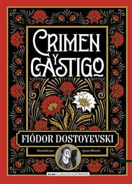
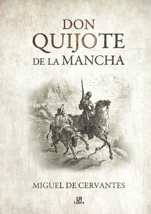
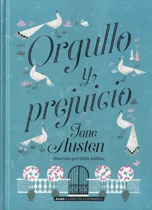
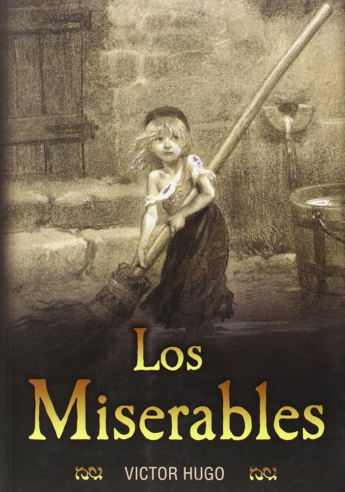
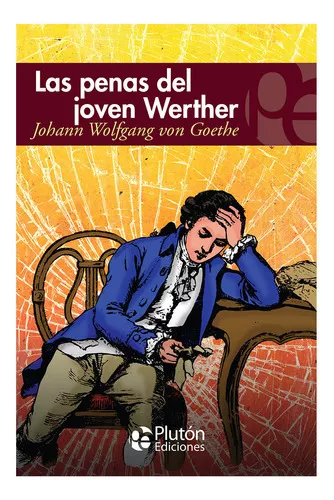

Libros imperdibles de ciencia ficción⭐
La ciencia ficción nos lleva a mundos y futuros imaginarios, nos permite pensar más allá de lo que conocemos y expandir nuestros horizontes. Te desafía a imaginar cómo podría ser el futuro ...


Los clásicos han perdurado a lo largo de los siglos porque siguen ofreciendo algo valioso a los lectores. Son historias que han resistido el paso del tiempo y han sido reconocidas por generaciones de lectores. Leerlos te conecta con una tradición literaria que ha impactado a millones de personas en todo el mundo
Crimen y castigo de Fiódor Dostoyevski

Autor: Fiódor Dostoyevski
Raskólnikov, un estudiante empobrecido de San Petersburgo, asesina a una anciana usurera con la creencia de que el fin justifica los medios. Sin embargo, tras el crimen, es atormentado por la culpa y el remordimiento. La novela explora temas profundos como la moralidad, la justicia y el impacto psicológico de la culpabilidad.
Don Quijote de la Mancha de Miguel de Cervantes

Autor:Miguel de Cervantes
Este clásico de la literatura española narra las aventuras del caballero Don Quijote, un hombre que, obsesionado con las novelas de caballería, decide convertirse en caballero andante. Junto a su fiel escudero, Sancho Panza, Don Quijote enfrenta múltiples aventuras cómicas y conmovedoras, mientras lucha por imponer su visión idealista de la realidad en un mundo que no lo comprende.
Orgullo y prejuicio de Jane Austen

Autor: Eric Carle
La historia sigue a Elizabeth Bennet, una joven inteligente y vivaz, y su relación con el misterioso y orgulloso señor Darcy. A lo largo de la novela, Austen explora temas como el orgullo, el prejuicio, la diferencia de clases sociales y los roles de género en la Inglaterra del siglo XIX, enmarcados en una brillante historia de amor y malentendidos.
Los Miserables de Victor Hugo

Autor: Roald Dahl
La novela sigue la vida de Jean Valjean, un exconvicto que intenta redimirse y escapar de la persecución implacable del inspector Javert. Ambientada en la Francia post-revolucionaria, la obra aborda temas como la justicia, la moral, la redención, la pobreza y el poder de la compasión.
Las penas del joven Werther de Johann Wolfgang von Goethe

Autor: Roald Dahl
La novela sigue la vida de Jean Valjean, un exconvicto que intenta redimirse y escapar de la persecución implacable del inspector Javert. Ambientada en la Francia post-revolucionaria, la obra aborda temas como la justicia, la moral, la redención, la pobreza y el poder de la compasión.
La ciencia ficción nos lleva a mundos y futuros imaginarios, nos permite pensar más allá de lo que conocemos y expandir nuestros horizontes. Te desafía a imaginar cómo podría ser el futuro ...

Por el mes de Julio, hemos seleccionado nuevas y emocionantes historias que merecen ser leídas. Ya sea que estés buscando la próxima gran novela para devorar, descubrir la obra de un autor emergente, o mantenerte al tanto de las novedades en tus géneros favoritos...

La biblioteca de la medianoche (2020) de Matt Haig.Es una novela que sigue a Nora Seed, una mujer que siente que su vida está llena de malas decisiones y arrepentimientos...